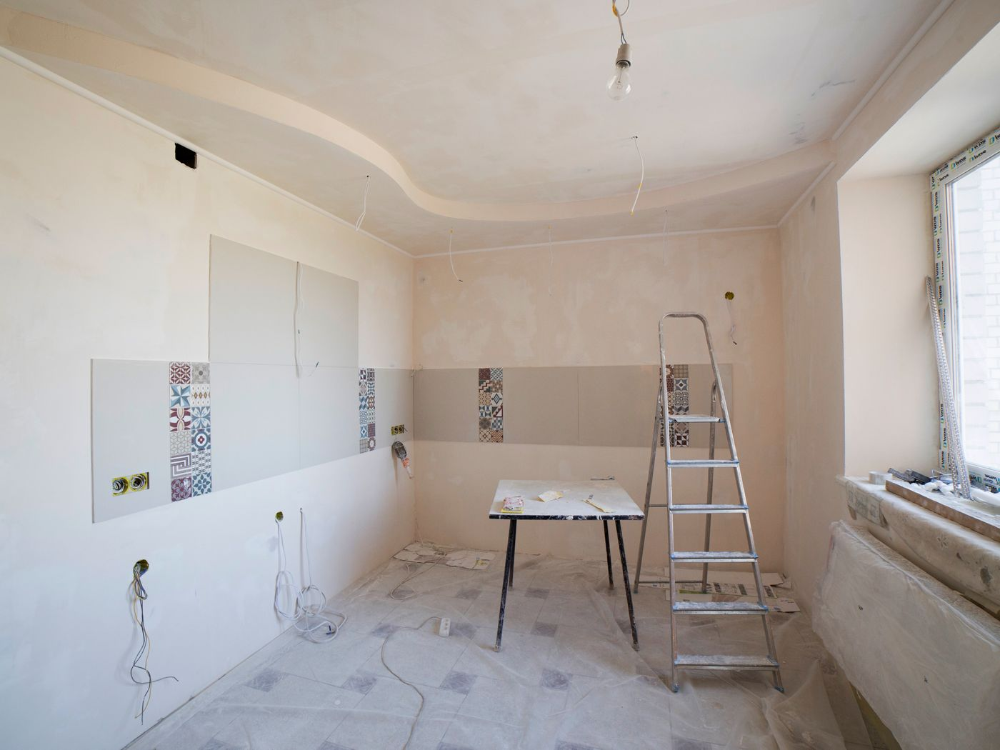
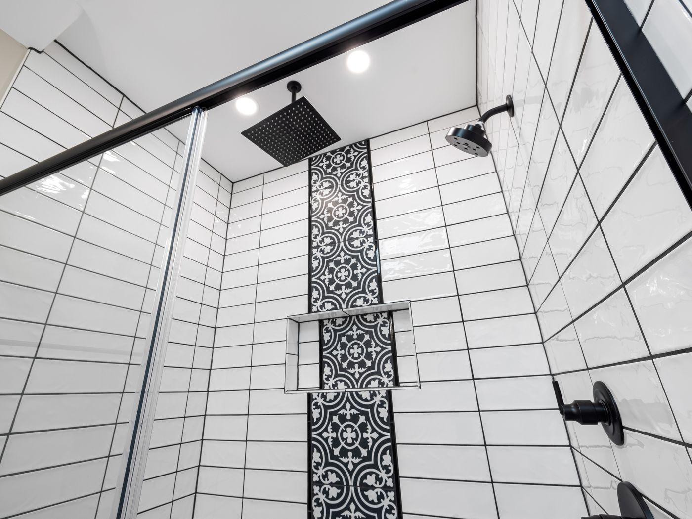
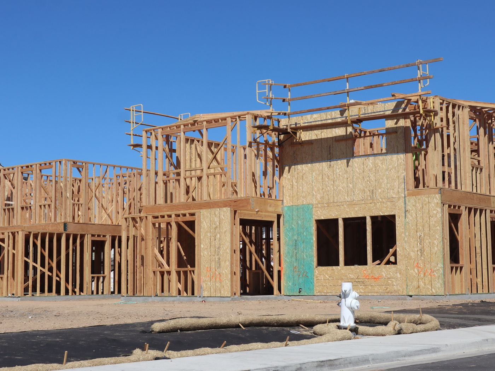
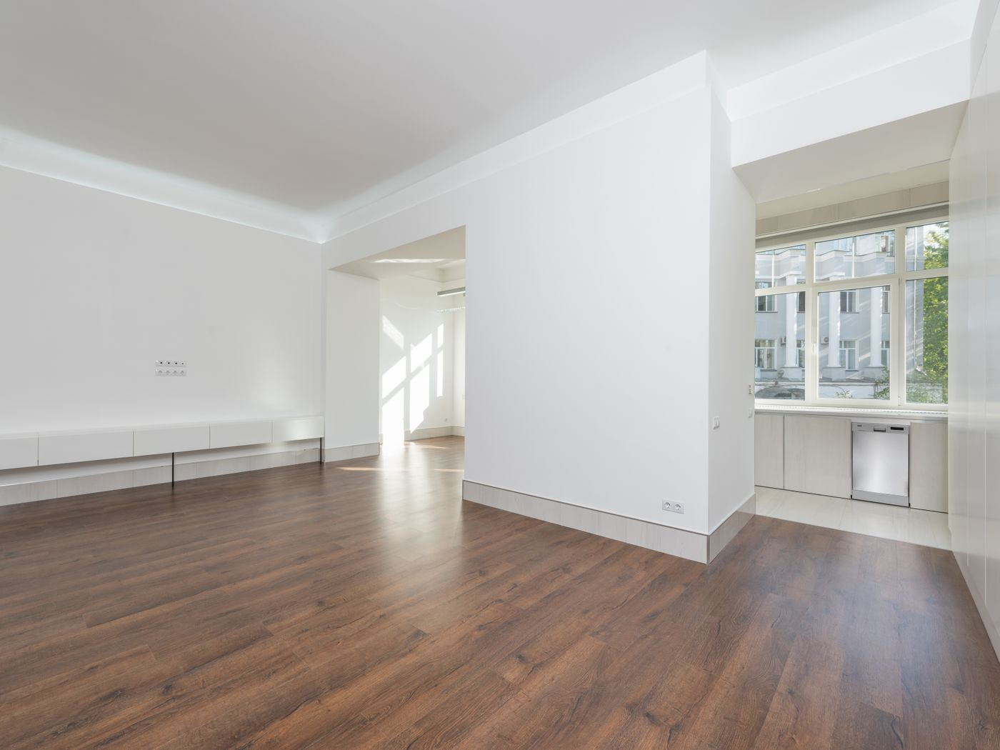
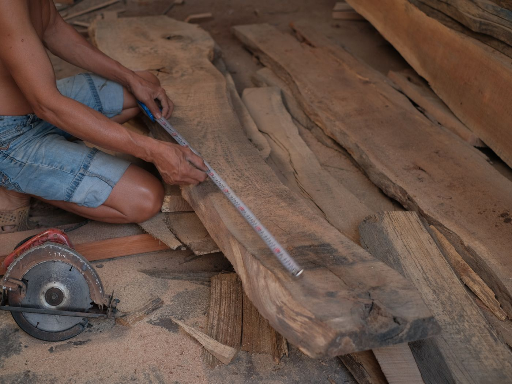
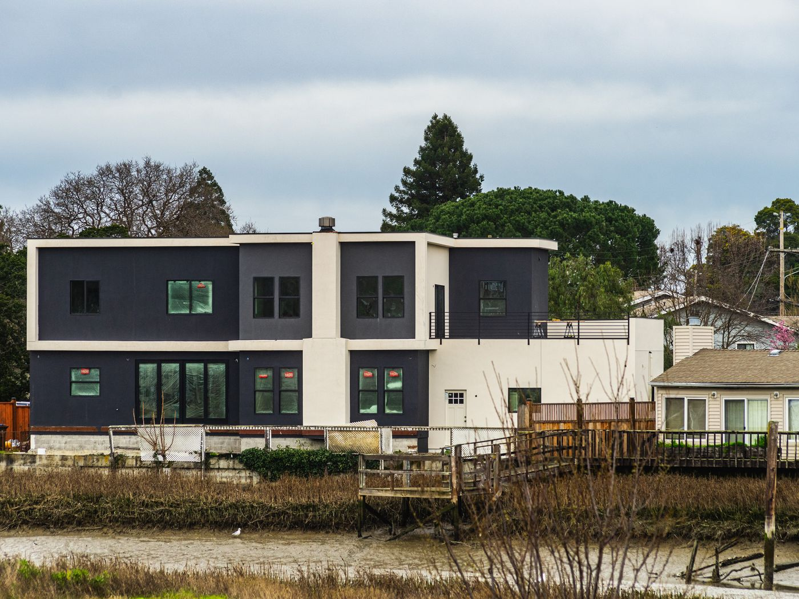

Kitchens, bathrooms, additions and whole-home remodels. A fixed written price before we start, a schedule we hold to, and one person you can call the whole way through.
Keep scrolling — the gallery glides. (These become the builder's own project photos.)






Everything you will love about the finished room is decided at this stage.
Sample services — a real builder's actual list drops straight in.
Cabinetry, stone, appliances, and the electrical and plumbing behind them. Usually six to ten weeks, and we will tell you which of those weeks you cannot cook.
Waterproofing done properly under the tile, because that is the part that fails and the part nobody sees.
Extra bedroom, bigger living space, or a separate unit out back. We handle the survey, the engineering and the permits.
For houses with good bones and a bad layout. Often better value than moving, once you have counted the realtor and the closing costs.
Our own carpenters, on our own payroll. Nobody learns on your house.
You will know the price and the schedule before a single thing is demolished.
We walk the space with you, talk about what you actually want, and give you a realistic range on the spot. No charge, no obligation, no salesperson.
Drawings, a materials list, and one number. Not an estimate that drifts — a price. If we missed something, that is our problem, not your invoice.
We pull the permits and book the inspections. You get a written start date and a written finish date before we begin.
The same person answers the phone all the way through. Weekly updates with photos, so you know where it is even when you are at work.
We walk it together, you list anything that is not right, and we finish that list before we ask for the final payment.
We would rather reject a bad piece than hide it behind trim.
“The quote we signed in March was the number we paid in July. After the last contractor we used, that alone was worth it.”
“Weekly photos meant I never had to chase anybody. I always knew exactly where the job was.”
“They found rot in the subfloor, showed me photos the same morning, and told me what it would cost before touching it.”
The dust goes, the trucks go, and it is just your house again — only better.
Not on our quotes. We price from drawings and a full materials list rather than a walk-round guess. The only thing that changes the number is you changing your mind, and that goes in writing before any work happens.
A bathroom is typically three to five weeks, a kitchen six to ten, a rear addition three to five months. You get written start and finish dates before we begin.
Usually yes for a single room, and we dust-seal the rest of the house. For a whole-home remodel it is generally easier if you do not. We will be honest with you about which one yours is.
Yes, all of it, including the engineering when a wall is load-bearing. Never let anyone talk you into skipping a permit — it surfaces the moment you try to sell.
Licence CGC-000000, bonded and fully insured. Ask any contractor for their licence number and check it on the state website before you sign anything.
Even if it is only an idea. We will walk the space, tell you honestly what it involves, and give you a realistic range before you spend anything.